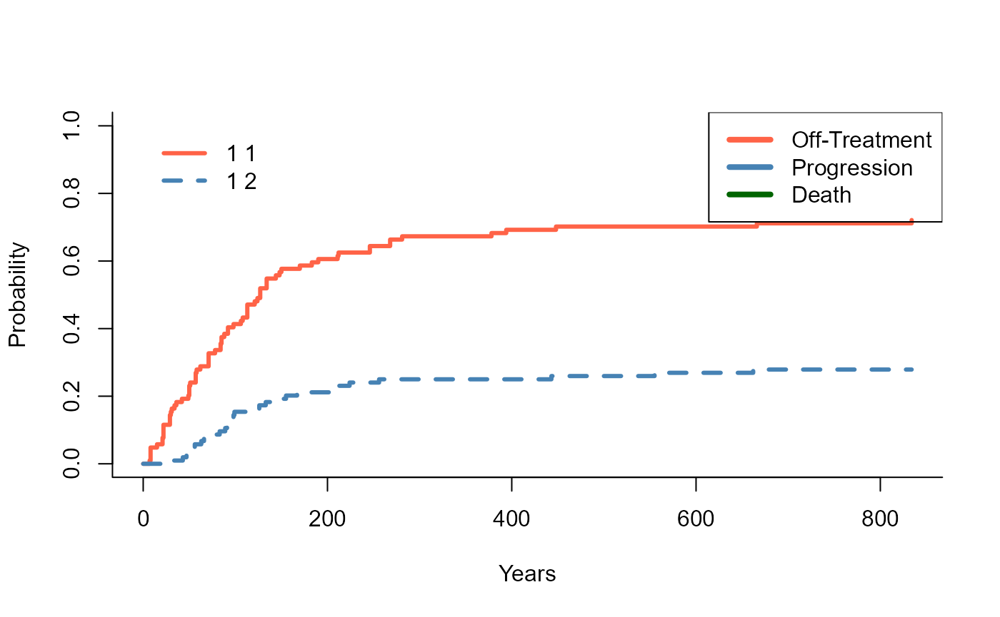
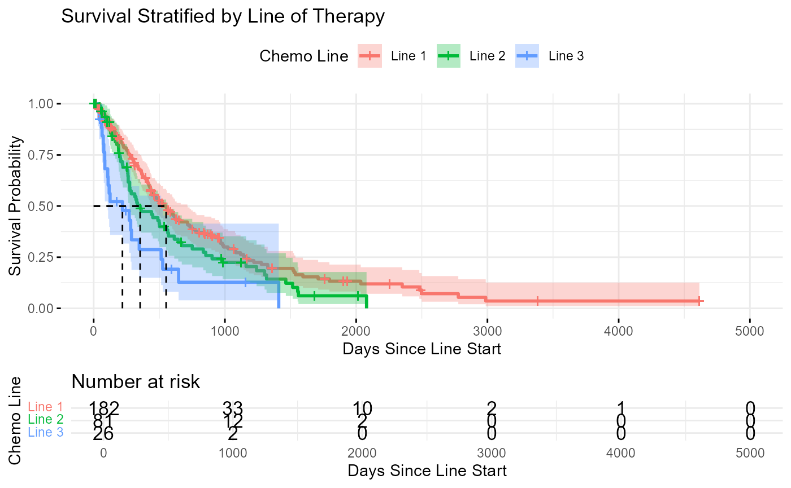

Sample Size Breakdown
## The total number of sarcoma patients is 313
## The total number of sarcoma first-line patients is 183
## The total number of sarcoma second-line patients is 80
## The total number of sarcoma third-line patients is 30
##
##
## Table: Number of patients who received docetaxel,gemcitabine by line of therapy
##
## |Line_of_Therapy | Number_of_Patients|
## |:---------------|------------------:|
## |First Line | 183|
## |Second Line | 80|
## |Third Line | 30|
## The total number of sarcoma patients with overlapping lines that were filtered out is 110
## The total number of sarcoma patients with single doses that were filtered out is 110
## Warning: There was 1 warning in `dplyr::summarise()`.
## ℹ In argument: `progression_date = min(progressiondate)`.
## Caused by warning in `min.default()`:
## ! no non-missing arguments to min; returning Inf
## The total number of sarcoma patients with treatment start pre-2010 that were filtered out is 1
##
##
## Table: Filtered Transition Counts Table
##
## |state |next_state | n|
## |:------------------------|:-------------|--:|
## |Death |NA | 85|
## |On_Treatment_Target_Line |off_treatment | 75|
## |On_Treatment_Target_Line |progression | 29|
## |On_Treatment_Target_Line |NA | 5|
## |off_treatment |Death | 38|
## |off_treatment |progression | 29|
## |off_treatment |NA | 8|
## |progression |Death | 47|
## |progression |NA | 11|
Descriptive statistics of episodes stratified by line and state
Summary of Episode Duration by Line and State (Excl. Death
State)
| Line 1 - On_Treatment_Target_Line |
2 |
51.0 |
51.0 |
35.5 |
66.5 |
0 (0%) |
0 (0%) |
| Line 1 - off_treatment |
1 |
139.0 |
139.0 |
139.0 |
139.0 |
0 (0%) |
0 (0%) |
| Line 1 - progression |
2 |
368.5 |
368.5 |
255.8 |
481.2 |
1 (50%) |
1 (50%) |
| Line 2 - On_Treatment_Target_Line |
81 |
130.9 |
91.0 |
55.0 |
149.0 |
0 (0%) |
4 (4.9%) |
| Line 2 - off_treatment |
55 |
176.9 |
98.0 |
48.5 |
159.0 |
25 (45.5%) |
7 (12.7%) |
| Line 2 - progression |
45 |
447.7 |
229.0 |
123.0 |
694.0 |
38 (84.4%) |
7 (15.6%) |
| Line 3 - On_Treatment_Target_Line |
26 |
119.5 |
76.5 |
41.2 |
123.8 |
0 (0%) |
1 (3.8%) |
| Line 3 - off_treatment |
19 |
74.9 |
55.0 |
29.5 |
71.5 |
13 (68.4%) |
1 (5.3%) |
| Line 3 - progression |
11 |
283.5 |
244.0 |
142.0 |
271.0 |
8 (72.7%) |
3 (27.3%) |
| Overall - On_Treatment_Target_Line |
109 |
126.7 |
87.0 |
49.0 |
143.0 |
0 (0%) |
5 (4.6%) |
| Overall - off_treatment |
75 |
150.5 |
76.0 |
46.5 |
144.0 |
38 (50.7%) |
8 (10.7%) |
| Overall - progression |
58 |
413.9 |
237.5 |
136.0 |
600.8 |
47 (81%) |
11 (19%) |
Cut-points
Cumulative incidence functions of transitions out of each health
state
Exit from on-treatment

Exit from progression

Exit from Off-treatment

Restricted mean survival time survival: comparisons across
lines
Restricted Mean Survival Time Comparisons Between Lines of
Therapy
| 2 vs 3 |
-119.18 |
-222.20 |
-16.15 |
0.0234 |
397.54 |
278.36 |
| 2 vs 1 |
38.26 |
-255.34 |
331.86 |
0.7984 |
397.54 |
435.80 |
| 3 vs 1 |
157.44 |
-145.70 |
460.57 |
0.3087 |
278.36 |
435.80 |
KM curve: time to death (overall survival)

KM curve: time to death (stratified by line)
